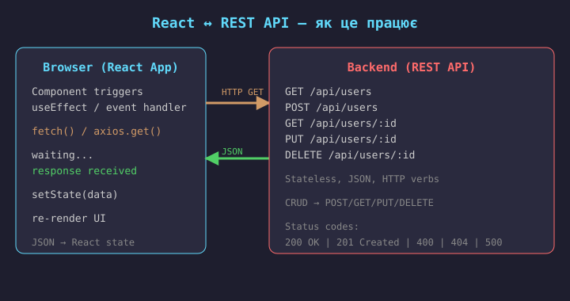
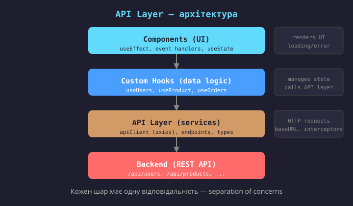
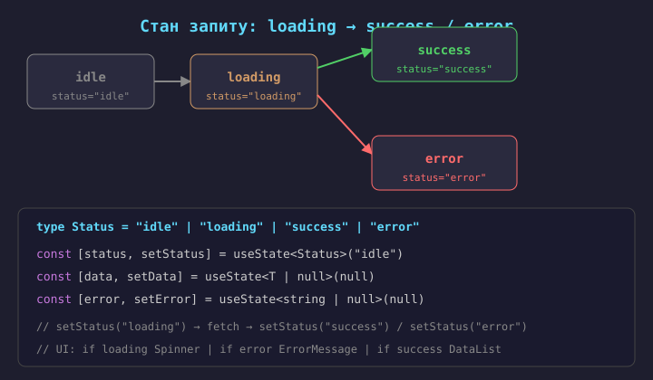
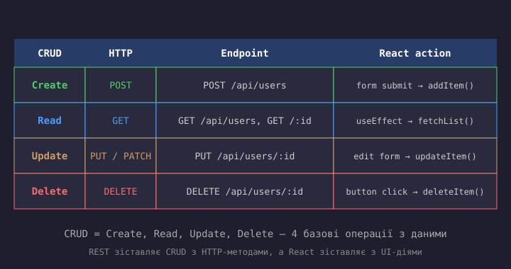
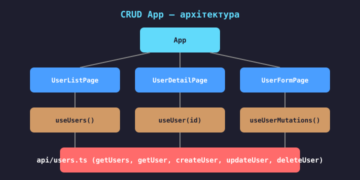
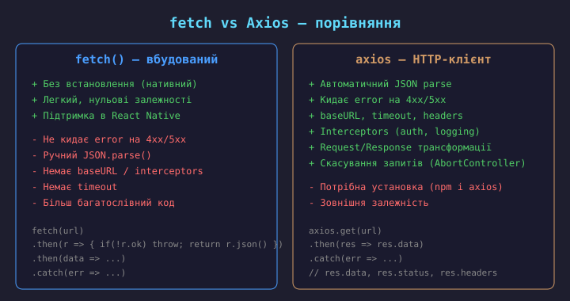
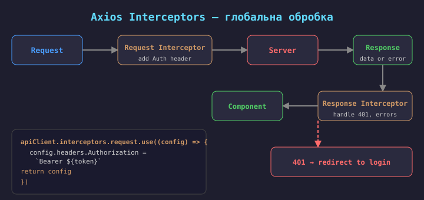

REST (Representational State Transfer) — архітектурний стиль для побудови веб-API. Основні принципи:
/api/users, /api/products/42);React не має вбудованого API-клієнта — використовується
fetch() або сторонні бібліотеки (Axios, ky).
API-виклики не повинні бути в компонентах напряму. Правильна архітектура — розділення на шари:
api/client.ts, api/users.ts) —
HTTP-клієнт, endpoint-функції, типи запитів/відповідей;hooks/useUsers.ts) —
управління станом запиту (loading/error/data), виклик API Layer;Компонент не знає про fetch/axios — він знає лише про
useUsers(), який повертає {users, loading, error}.

import { useState, useEffect } from "react";
type User = { id: number; name: string };
function UserList() {
const [users, setUsers] =
useState<User[]>([]);
useEffect(() => {
fetch("https://api.example.com/users")
.then(r => {
if (!r.ok)
throw new Error("Failed");
return r.json() as Promise<User[]>;
})
.then(setUsers)
.catch(err => console.error(err));
}, []);
return (
<ul>
{users.map(u => (
<li key={u.id}>{u.name}</li>
))}
</ul>
);
}
fetch() — нативний браузерний API.
Особливості fetch:
res.ok;.json() парсинг;AbortController для скасування.Мінус: багатослівний — для кожного запиту треба писати перевірки, headers, error handling.
→ тому використовують Axios або API Layer-абстракції.

Асинхронний запит має три можливі стани:
Помилка: використовувати лише isLoading boolean.
Неможливо розрізнити «даних немає, бо запит не вдався»
від «даних немає, бо список порожній».
Правильно: окремо status + data + error,
або об'єднати в один стан через useReducer.
Pattern: "idle" | "loading" | "success" | "error" —
status as enum.
type State<T> = {
status: "idle" | "loading"
| "success" | "error";
data: T | null;
error: string | null;
};
type Action<T> =
| { type: "start" }
| { type: "success"; data: T }
| { type: "error"; error: string };
function reducer<T>(
state: State<T>,
action: Action<T>
): State<T> {
switch (action.type) {
case "start":
return { status: "loading", data: null, error: null };
case "success":
return { status: "success", data: action.data, error: null };
case "error":
return { status: "error", data: null, error: action.error };
}
}
// Custom Hook з useReducer
export function useAsync<T>(fn: () => Promise<T>, deps: any[] = []) {
const [state, dispatch] =
useReducer(reducer<T>, {
status: "idle", data: null, error: null
});
useEffect(() => {
let cancelled = false;
dispatch({ type: "start" });
fn()
.then(data => {
if (!cancelled)
dispatch({ type: "success", data });
})
.catch(err => {
if (!cancelled)
dispatch({ type: "error", error: err.message });
});
return () => { cancelled = true; };
}, deps);
return state;
}
function UserList() {
const { status, data, error } =
useAsync(() => api.getUsers(), []);
if (status === "loading")
return <Spinner />;
if (status === "error")
return (
<ErrorView
message={error}
onRetry={refetch}
/>
);
if (status === "success" && data.length === 0)
return <EmptyState />;
return (
<ul>
{data.map(u => (
<li key={u.id}>{u.name}</li>
))}
</ul>
);
}
Шаблони UI для станів:
Важливо: показувати користувачу не просто «Error», а зрозуміле повідомлення + спосіб виправити (retry, перевірити з'єднання).
import { Component, type ReactNode } from "react";
class ErrorBoundary extends Component {
state = { hasError: false };
static getDerivedStateFromError() {
return { hasError: true };
}
componentDidCatch(error: Error) {
console.error(error);
// sentry, analytics...
}
render() {
if (this.state.hasError)
return this.props.fallback;
return this.props.children;
}
}
// Використання
<ErrorBoundary fallback={<ErrorView />}>
<UserList />
</ErrorBoundary>
Error Boundary — React-компонент, що ловить помилки рендерингу в дочірньому дереві.
Ловить: помилки в render, lifecycle, конструкторах.
НЕ ловить: помилки в event handlers, async коді, setTimeout — для цього try/catch.
Створюються через class-компоненти
(або react-error-boundary бібліотека).
Обгортають секції застосунку: якщо впаде один блок — інші продовжать працювати.


// hooks/useUsers.ts
export function useUsers() {
const [state, setState] = useState<
{ users: User[]; loading: boolean; error: string | null }
>({ users: [], loading: true, error: null });
const refetch = useCallback(async () => {
setState(s => ({ ...s, loading: true, error: null }));
try {
const users = await api.getUsers();
setState({ users, loading: false, error: null });
} catch (e) {
setState({ users: [], loading: false, error: (e as Error).message });
}
}, []);
useEffect(() => { refetch(); }, [refetch]);
return { ...state, refetch };
}
// Використання
function UserListPage() {
const { users, loading, error, refetch } =
useUsers();
if (loading) return <Spinner />;
if (error) return (
<ErrorView msg={error}
onRetry={refetch} />
);
return (
<ul>
{users.map(u => (
<li key={u.id}>
{u.name}
<Link to={`/users/${u.id}``}>View</Link>
</li>
))}
</ul>
);
}
function CreateUserForm() {
const [name, setName] = useState("");
const [email, setEmail] = useState("");
const [saving, setSaving] = useState(false);
const [error, setError] = useState(null);
const handleSubmit = async (e: FormEvent) => {
e.preventDefault();
setSaving(true);
setError(null);
try {
await api.createUser({ name, email });
// redirect або refetch list
navigate("/users");
} catch (err) {
setError((err as Error).message);
} finally {
setSaving(false);
}
};
return (
<form onSubmit={handleSubmit}>
<input value={name} onChange={...} />
<input value={email} onChange={...} />
<button disabled={saving}>
{saving ? "Saving..." : "Create"}
</button>
{error && <p className="error">{error}</p>}
</form>
);
}
Стани форми Create:
Після успішного створення:
navigate);function EditUserPage({ id }: { id: string }) {
const { data: user, loading } =
useAsync(() => api.getUser(id), [id]);
const [form, setForm] = useState(null);
const [saving, setSaving] = useState(false);
// Заповнити форму коли дані завантажено
useEffect(() => {
if (user) setForm(user);
}, [user]);
const handleSave = async () => {
setSaving(true);
try {
await api.updateUser(id, form);
navigate(`/users/${id}`);
} finally {
setSaving(false);
}
};
if (loading) return <Spinner />;
if (!form) return null;
return <UserForm value={form}
onChange={setForm}
onSubmit={handleSave}
saving={saving} />;
}
Особливості Update:
Важливо: не копіювати prop у state
напряму (anti-pattern). Використовувати
key={id} для скидання форми
при зміні id, або controlled form.
function DeleteButton({ id, onDeleted }: {
id: string;
onDeleted: () => void;
}) {
const [deleting, setDeleting] = useState(false);
const handleDelete = async () => {
if (!confirm("Delete this user?")) return;
setDeleting(true);
try {
await api.deleteUser(id);
onDeleted(); // refetch або navigate
} catch (e) {
alert("Failed to delete");
} finally {
setDeleting(false);
}
};
return (
<button onClick={handleDelete}
disabled={deleting}>
{deleting ? "Deleting..." : "Delete"}
</button>
);
}
Особливості Delete:
confirm() або
модальне вікно (небезпечна операція);refetch() списку, абоПідтвердження можна замінити на модальне вікно з текстом «Are you sure?» + кнопки Yes/No.
// ❌ 1. Stale list (список не оновлюється)
// create item
await axios.post("/api/users", data)
// ✗ list still shows old data!
// ✅ refetch after mutation:
await create(); await refetchList()
// ❌ 3. Корзина помилок без UI
axios.post(...) // без .catch
// unhandled rejection
// ✅ try/catch + setError + UI toast
// ❌ 2. Race condition (запит-перегонка)
// user types "a" then "ab"
fetch("a") // slow
fetch("ab") // fast, returns first
// "a" response overwrites!
// ✅ AbortController / cancel flag
// ❌ 4. Подвійний fetch (StrictMode)
// useEffect runs twice in dev
useEffect(() => fetch(), [])
// 2 API calls in dev mode
// ✅ cleanup fn / React 18 automatic
// ❌ Без скасування (race condition)
useEffect(() => {
fetch(`/api?q=${query}`)
.then(setData)
}, [query])
// старий запит може перезаписати новий
// ✅ З AbortController
useEffect(() => {
const ctrl = new AbortController()
fetch(url, { signal: ctrl.signal })
return () => ctrl.abort()
}, [query])
Axios варіант:
useEffect(() => {
const ctrl = new AbortController()
axios.get("/api/users", { signal: ctrl.signal })
.then(res => setUsers(res.data))
.catch(err => { if (!axios.isCancel(err)) setError(err) })
return () => ctrl.abort()
}, [])
Песимістичний (звичайний)
UI затримується на час запиту.
Оптимістичний (швидкий UX)
UI миттєво реагує.
const deleteOptimistic = async (id: string) => {
const prev = items; // 1. save snapshot
setItems(items.filter(i => i.id !== id)); // 2. update UI now
try { await api.deleteUser(id); } // 3. send request
catch (e) { setItems(prev); showError(); } // 4. rollback on error
}
✅ Підходить:
Сервер зазвичай підтверджує без помилок → користувач не чекає.
❌ Не підходить:
Тут — песимістичний підхід: чекаємо підтвердження сервера.

// api/client.ts
import axios from "axios";
export const apiClient = axios.create({
baseURL: "https://api.example.com",
timeout: 10000,
headers: {
"Content-Type": "application/json",
"Accept": "application/json",
},
});
// Використання
const res = await apiClient.get("/users");
// res.data → JSON-відповідь (авто-parsed)
// res.status → 200
// res.headers → response headers
// POST
await apiClient.post("/users", body);
// PUT
await apiClient.put(`/users/${id}`, body);
// DELETE
await apiClient.delete(`/users/${id}`);
Переваги Axios instance:
.json();Встановлення:
npm install axios

// api/client.ts — interceptors
import axios from "axios";
export const apiClient = axios.create({ baseURL: "https://api.example.com" });
// Request interceptor — додаємо auth token
apiClient.interceptors.request.use((config) => {
const token = localStorage.getItem("token");
if (token) {
config.headers.Authorization = `Bearer ${token}`;
}
return config;
});
// Response interceptor — обробка помилок
apiClient.interceptors.response.use(
(response) => response, // success — пропускаємо
(error) => {
if (error.response?.status === 401) {
// token expired → redirect to login
localStorage.removeItem("token");
window.location.href = "/login";
}
if (error.response?.status >= 500) {
// server error → show toast
showToast("Server error. Try later.");
}
return Promise.reject(error);
}
);
Interceptors — глобальні «фільтри» для всіх запитів/відповідей. Призначення: auth headers, error handling, logging, retry, metrics.
// types/api.ts
export type User = {
id: string;
name: string;
email: string;
};
export type CreateUserDTO = {
name: string;
email: string;
};
// api/users.ts
import { apiClient } from "./client";
import type { User, CreateUserDTO } from "../types/api";
export const usersApi = {
list: () =>
apiClient.get<User[]>("/users").then(r => r.data),
getById: (id: string) =>
apiClient.get<User>(`/users/${id}`).then(r => r.data),
create: (data: CreateUserDTO) =>
apiClient.post<User>("/users", data).then(r => r.data),
update: (id: string, data: Partial<CreateUserDTO>) =>
apiClient.put<User>(`/users/${id}`, data).then(r => r.data),
delete: (id: string) =>
apiClient.delete(`/users/${id}`),
};
Переваги endpoint-функцій:
DTO (Data Transfer Object) —
тип для передачі даних у API-виклик
(напр. CreateUserDTO без id).
У hooks викликаємо usersApi.list(),
а не apiClient.get(...) напряму.
src/ ├── api/ │ ├── client.ts // axios instance │ ├── users.ts // CRUD endpoints │ ├── products.ts // CRUD endpoints │ └── index.ts // re-export ├── hooks/ │ ├── useUsers.ts // data + state │ └── useProducts.ts // data + state ├── types/ │ └── api.ts // User, Product, DTOs └── components/
// 1. types/api.ts — типи
export type User = { id: string; name: string; email: string };
// 2. api/client.ts — axios instance + interceptors
export const apiClient = axios.create({ baseURL: "..." });
// 3. api/users.ts — endpoint-функції
export const usersApi = {
list: () => apiClient.get<User[]>("/users").then(r => r.data),
create: (data: CreateUserDTO) => apiClient.post<User>("/users", data).then(r => r.data),
};
// 4. hooks/useUsers.ts — state + API calls
export function useUsers() {
const [state, dispatch] = useReducer(reducer, initial);
const refetch = async () => {
dispatch({type:"start"});
await usersApi.list()
.then(d => dispatch({type:"success", data:d}));
};
useEffect(() => { refetch() }, []);
return { ...state, refetch };
}
// 5. components/UserListPage.tsx — лише UI
function UserListPage() {
const { data, status, error } = useUsers();
if (status === "loading") return <Spinner />;
return <ul>{data.map(u => <li key={u.id}>{u.name}</li>)}</ul>;
}
axios напряму → винести в api/;AbortController або cancelled flag;fetch().then() без .catch.
Користувач не бачить, що щось зламалось;"https://api...".
Рішення: axios instance з baseURL;any замість дженериків.
Рішення: apiClient.get<User[]>();Server state (дані з API):
→ TanStack Query, SWR (Лекція 6)
Client state (UI state):
→ useState, useReducer, Context
На цьому етапі ми керуємо server state вручну (useEffect + fetch + useState). В Лекції 6 розглянемо TanStack Query — інструмент, що автоматизує caching, refetch, invalidation, optimistic updates.
loading / success / error (status enum),
не просто boolean. UI: spinner, error view, empty state.api/client.ts (instance) →
api/users.ts (endpoints) →
hooks/useUsers.ts (state) →
components/ (UI).